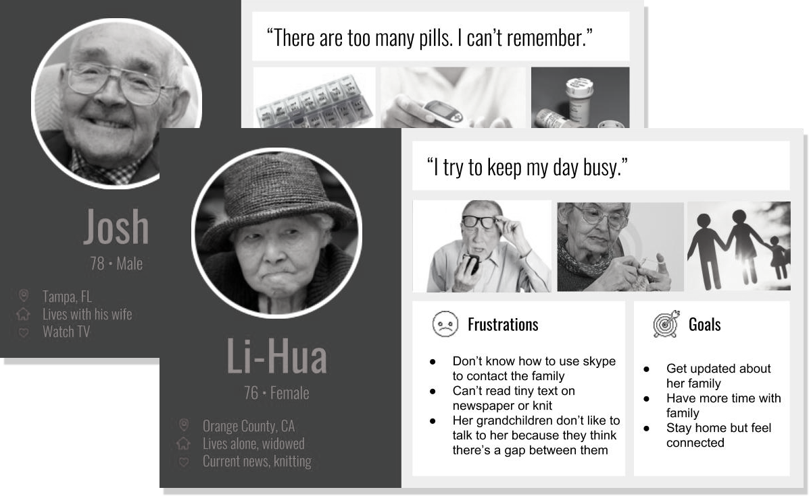

kasvi
A ubiquitous product design concept that initiates meaningful interactions between seniors and their loved ones beyond physical space
Project Type
Team project of integrated product design course
Role
I led and planned the entire UX research and design process in a team consisting of a industrial designer, an engineer and an MBA
Duration
Winter 2018 (3 months)
Skills
Empathy map, Storyboard, Concept testing, Card Sorting, Product Thinking, Product Fabrication, UI Design
Introduction
Design for the Coming Future
As life expectancy sharply increases in developed countries, social and healthcare providers face increasing pressure to meet the health needs presented by the large numbers of people in this status. During my Integrated Product Design course, I teamed up with students from industrial design, engineering and business school to design and market a product in a simulated market environment for the growing needs of senior citizens in the coming future.

We demonstrated our working prototype with tradeshow visitors
Product at a glance
Connections beyond Distance
Kasvi, a sleek home décor product, initiates meaningful interactions between seniors and their loved ones beyond physical space. During our research, we identified that social wellbeing of senior citizens has great demands, yet a less addressed needs> in the market. Empathizing with the target users, our design, kasvi, provides an ambient way to interact with each other at home through the hobby of gardening. It is the most-demanded product among 6 teams in the class voted by over 200 tradeshow visitors.

Design Process
Envision shipping product to the market
Competing in a simulated market space of 6 teams, we conducted rapid product development cycles from researching market potentials, validating design concepts, fabricating tangible prototypes to marketing products in a tradeshow.

Research
Understand User Needs and Market Potentials
As the design prompt of this class, designing active technology for senior citizens, targets a broad group of users, we started out with interviews and competitor review to understand the pain points and desires of seniors’ daily life. We conducted 20 user interviews, including 16 senior citizens and 4 caregivers, and observation that provided insights of core user needs and market potentials.
12
senior citizens at home and hospital
4
caregivers including family members and medical practitioners
10+
competitor products for different needs
Scoping
Identify the Niche Market
Affinity diagram & consulting model
To synthesize the data collected and find out the common themes, we leveraged affinity diagram and consulting model to frame 4 essential needs: illness prevention, health maintenance, hospital support and aging with vitality.
Illness prevention
Health maintenance
Caregiver support
Aging with vitality

Discussing and clustering findings on the affinity wall
Personas
Based on the data collected, we created personas and user value statement to frame our target users. Our personas were senior adults of varied mental and physical capabilities, however, few traits shared among them are living independently and aging with vitality and dignity.
Ideation
Brainstorm with Multidisciplinary Perspectives
Instilling UX methods into the team, I led a brainstorming session that strived to create an environment where team members could get inspired and build on top of each others’ ideas.
Validation
Validate Design with Stakeholders and Users
Value statement scoring
To communicate values of different stakeholders and seeking consensus, we discussed the value statement together during our meeting to rate each concept according to our values, passion, technical capabilities and market potentials.
Concept card testing
We tested the design concepts with two rounds of concept card testing. In the first round of testing, we presented potential customers with more abstract description of concepts. This informed us the willingness of purchase of each design concept and further design inspirations. We re-iterated on few design concepts for the second round, which gave us more concrete feedback on design details and product functionality.
Identify the intersection of team values and user needs
Cross referencing the results from value statement and concept tests, we created a statistical map to find out the intersecting point that displays high market potentials and us valued by the team. It turned out three product concepts ranked similarly on the map, which are self-care, connections with others and continuing hobbies.
Product fabrication
Prototype early, iterate quickly
Going tangible
We began prototyping early on to test out design details and potential technical issues. We played around forms and materials for different fidelity.
Conjoint analysis & costing model
We conducted conjoint analysis to help evaluate the cost and needs of certain design features. Finalizing the design and fabrication details, we evaluated the competitor landscape and define the costing model.
Final Design
kasvi, grow the good moments together beyond distance
Impact

>50% demands
We are the ”Most-demanded product” across all six teams, where more than 50% of the tradeshow participants bought our products.

Brave to visit the less visited
Targeting the less-visited product area of social wellbeing of the senior, kasvi received positive feedback across a wide range of demographics.
“I can imagine using this product with not only my grandparents.”
Takeaway
Prototype early. Be adaptable to the market